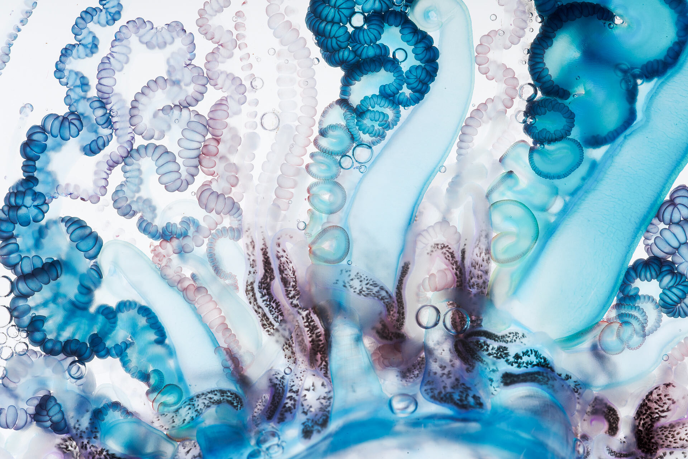

Publications
Photo credit: Aaron Ansarov

Spinning and corkscrewing of oceanic macroplankton revealed through in situ imaging
Sutherland, K. R., Damian-Serrano, A., Du Clos, K. T., Gemmell, B. J., Colin, S. P., & Costello, J. H. (2024)
Science Advances

Colonial architecture modulates the speed and efficiency of multi-jet swimming in salp colonies
Damian-Serrano A., Walton, K.A., Bishop-Perdue, A., Bagoye, S, Du Clos, K. T., Gemmell, B. J., Colin, S. P., Costello, J.H., Sutherland, K.R. (Preprint, in review)
BioRxiv

Vertical trophic structure and niche partitioning of gelatinous predators in a pelagic food web: Insights from stable isotopes of siphonophores
Hetherington, E. D., Close, H. G., Haddock, S. H. D., Damian-Serrano, A., Dunn, C. W., Wallsgrove, N. J., Doherty, S. C., & Choy, C. A. (2024)
Limnology and Oceanography

Yellow tails in Iasis cylindrica (Salpida: Salpidae) chains suggest zooid-type subspecialization in salp colonies
Damian-Serrano A. (2024)
Ecology — The Scientific Naturalist

A developmental ontology for the colonial architecture of salps
Damian-Serrano A., Sutherland, K.R. (2024)
The Biological Bulletin

A new molecular phylogeny of salps (Tunicata: Thalicea: Salpida) and the evolutionary history of their colonial architecture
Damian-Serrano A., Hughes, M., Sutherland, K.R. (2023)
Integrative Organismal Biology

Characterizing the secret diets of siphonophores (Cnidaria: Hydrozoa) using DNA metabarcoding
Damian-Serrano A., Hetherington E.D., Choy CA, Haddock S.H.D., Lapides A., Dunn C.W. (2022)
PLoS ONE

Evolutionary causes and consequences of ungulate migration
Abraham, J.O., Upham, N.S., Damian-Serrano, A., Jesmer, B.R. (2021)
Nature Ecology & Evolution

Integrating siphonophores into marine food-web ecology
Hetherington, E.D., Damian-Serrano, A., Haddock, S.H.D., Dunn, C.W., Choy, C.A. (2022)
Limnology & Oceanography Letters — Current Evidence

The evolutionary history of siphonophore tentilla: Novelties, convergence, and integration
Damian-Serrano, A., Haddock, S.H., & Dunn, C.W. (2021)
Integrative and Organismal Biology

From tides to nucleotides: genomic signatures of adaptation to environmental heterogeneity in barnacles
Nunez, J.C.B., Rong, S., Ferranti, D.A., Damian-Serrano, A., Neil, K.B., Glenner, H., Elyanow, R.G., Brown, B.R., Alm-Rosenblad, M., Blomberg, A. & Johannesson, K. (2021)
Molecular Ecology

The evolution of siphonophore tentilla for specialized prey capture in the open ocean
Damian-Serrano, A., Haddock, S.H.D., & Dunn, C.W. (2021)
PNAS (Cover)

Ecological load and balancing selection in circumboreal barnacles
Nunez, J.C., Rong, S., Damian-Serrano, A., Burley, J.T., Elyanow, R.G., Ferranti, D.A., Neil, K.B., Glenner, H., Rosenblad, M.A., Blomberg, A., and Johannesson, K., (2020)
Molecular Biology & Evolution

A mesopelagic ctenophore representing a new family, with notes on family-level taxonomy in Ctenophora: Vampyroctena delmarvensis gen. nov. sp. nov. (Vampyroctenidae, fam. nov.).
Townsend, J.P., Tassia, M.G., Damian-Serrano, A., Whelan, N.V., Halanych, K.M., & Sweeney, A.M. (2020)
Marine Biodiversity

Erythromycin sensitivity across different taxa of marine phytoplankton. A novel approach to sensitivity of microalgae and the evolutionary history of the 23S gene
Sendra, M., Damian-Serrano, A., Araujo, C.V.M., Moreno-Garrido, I., & Blasco, J. (2018)
Aquatic Toxicology

Improved phylogenetic resolution within Siphonophora (Cnidaria) with implications for trait evolution
Munro, C., Siebert, S., Zapata, Z., Howison, M., Damian-Serrano, A., Church, S.H., Goetz, F.E., Pugh, P.R., Haddock, S., & Dunn, C.W. (2018)
Molecular Phylogenetics & Evolution